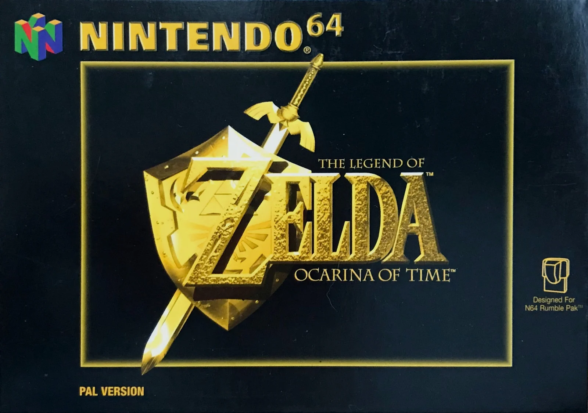

North American Box ArtThe North American box art is what we could find on the shelves here back in 1998. This is the box art I personally grew up with. This is also the image displayed on the game cartridge. |
European Box ArtThe European box art is almost the same as the North American box art just with a different color pallet. While I do think the color pallet is better than the North American one, I do think the all gold shown leaves out some color detailing. |
Japanese Box ArtThe Japanese box art is the most unique of the three. The boxes the N64 games came in in Japan are also vertical rather than horizontal. This features the same logo as the North American one, however with a completely different background image. |